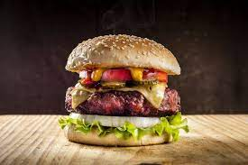

Burger

Description
The classic American Hamburger is staple of Western coulinary culture.
Popularized in the United States, the simple yet savory dish combines the
fresh elegance of a sub with the full, smokey flavors of cooked beef. There
are an infinite number of variations to the dish, and today we'll make a
relatively classic American dish, combining a briouche bun and ground beef
with caramelized onions amongst other fresh produce.
Ingredients
- 1 briouche bun
- 4 oz ground beef of choice
- 1 head of lettuce
- 1 slice American cheese
- 1/2 red onion
- 1/4 stick unsalted butter
- 1/2 cup mayonnaise
- 1/4 cup mustard
- 1/4 cup ketchup
- 1 tomato
- salt
- pepper
Steps
- In a pan over medium heat, melt 1 tablespoon unsalted butter.
- Lightly toast the flat side of each half of the bun in the pan
until golden brown. Remove the buns.
- With your hands, form your ground beef into a ball, and press flat
on two side until a 3/4" thick patty is formed.
- Season generously on both sides of the patty with salt and pepper
- In a pan over medium-high heat, sear your burger on one side until
a crisp crust forms.
- Flip burger, lay a slice of American cheese over top, and add the
remainder of your butter to the pan. Let this sear until it reaches
an internal temp of ~135 degrees Fahrenheit, using a spoon to baste
the butter over top of the burger continuosly. Remove burger and let
set at least 5 minutes.
- In the same pan add 1/2 sliced onion over medium high heat. season
with salt and pepper, and let cook until golden on all sides. Remove onions.
- In a bowl, mix together your mustard, mayo, and ketchup.
- Assemble by lying the bottom bun face up. In order by layer, add one
piece of lettuce wide enough to cover the bun, top with your patty, then with
one slice of tomato, and your onions.
- Lastly, spread a generous serving of your sauce to the top bun, and crown
the burger.